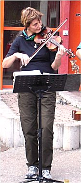

Monika
)
 |
Monika Knab ist seit Nefti und Irenes Australienreise dabei: Als wir die beiden im kleinen Kreis im „Piccola Venezia" in Kenzingen verabschiedeten, war Monika mit Gerhard zufällig anwesend. Und da hat's geschnackelt: Als wir nur noch mit den Wirtsleuten alleine waren, hat sie ihre ersten Töne zu unserer Musik dazugegeben. Und das macht sie bis heute, und diese Musik lässt sie nicht mehr los! Sie hat eine klassische Violinausbildung und trat schon mit verschiedenen Gruppen, u. a. Quartetten auf. Von der irisch-amerikanischen Musik ist sie inzwischen ganz angefressen. Sie überholt schon mal Markus' Banjo! Nachdem Nefti wieder da ist, sind wir ganz glücklich, dass sie bei uns geblieben ist. Inzwischen guckt sie Nefti auch die „dreckige" Bluegrassfiddle-Spielweise ab. Monika hat inzwischen ihren eigenen Stil entwickelt: Ragtimes sind ihre Spezialität. Inzwischen spielt sie auch schon den einen oder anderen Double-Shuffle. |